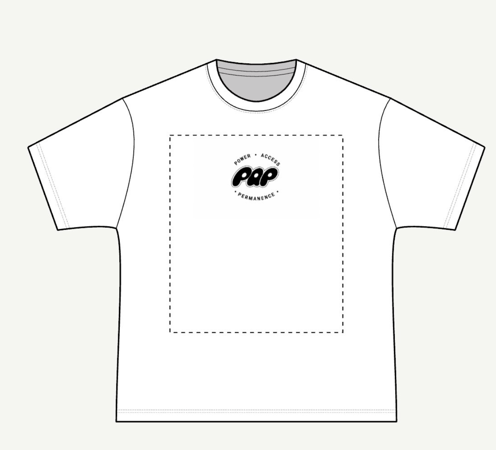
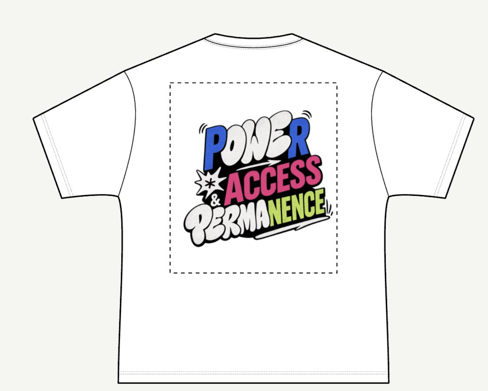
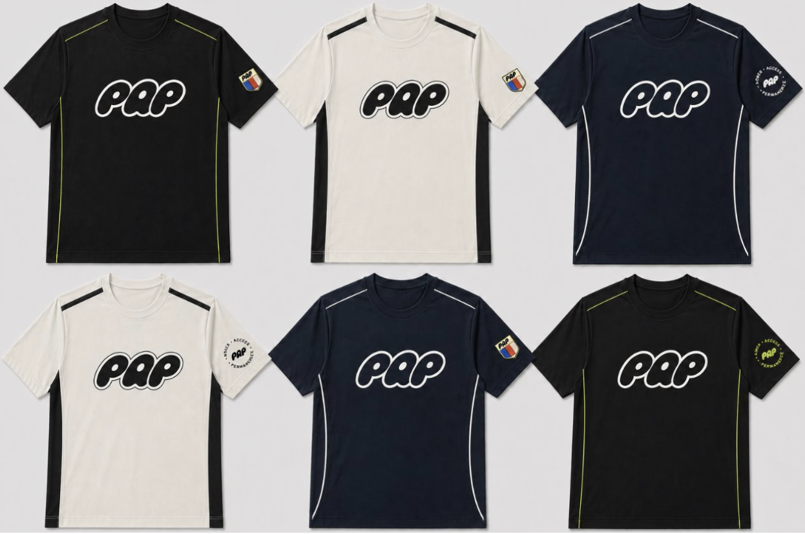
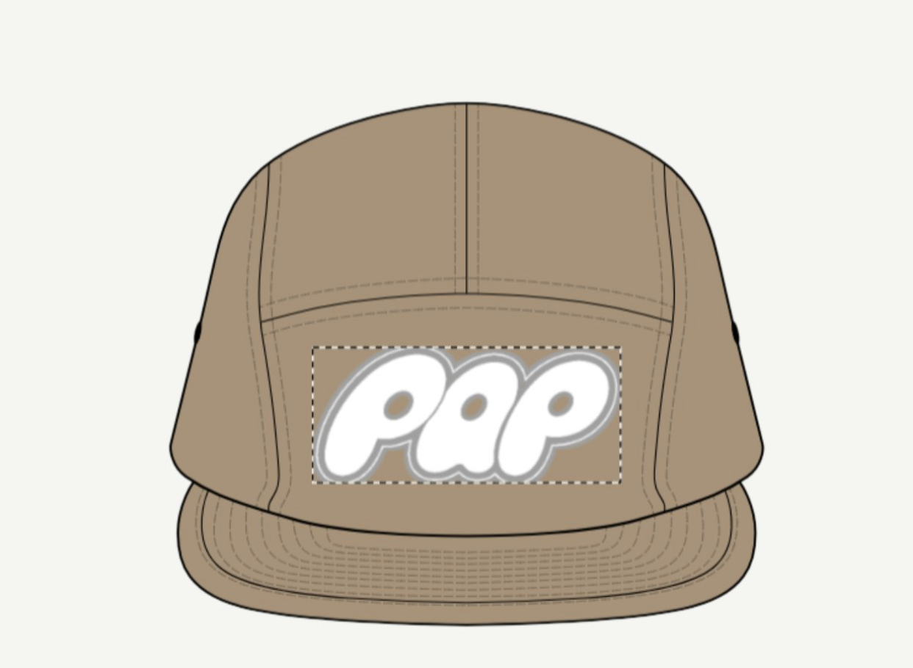

Project Name: PAP Apparel
The PAP merchandising team developed a clothing brand that
translates Los Angelos culture, landmarks, and community
identity into streetwear-inspired designs anchored by
a unifying logo and runner motif. Product curation and
design focused on representing small business inclusion
and Olympic influence while exploring a mix of streetwear
and high-fashion elements. The brand's direction was
guided by the core values of power, access, and
permanence.



